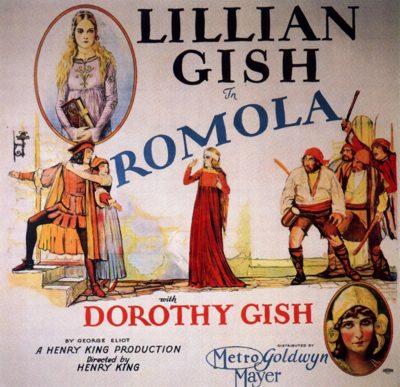

Romola
Starring: Lillian Gish, Dorothy Gish, William Powell
Director: Henry King
Writer: Jules Furthman
Producer: Henry King
Romola is a 1924 American silent drama film directed by Henry King and shot on location in Italy. The film stars Lillian Gish, Dorothy Gish, William Powell, and Ronald Colman, and is based on the 1863 George Eliot novel of the same name.
Watch Online: Internet Archive
Trivia
- Examples of such films included The Christian (London: 1923), The Bright Shawl (Cuba: 1923), The Eternal City (Italy: 1923), Madame Sans-Gêne (France: 1925), The Four Feathers (Tanzania and Sudan: 1929) and White Shadows in the South Seas (Marquesas, Tahiti: 1928).
- After the end of the silent era, foreign locations did not become part of American filmmaking again until the 1950s.
- William Powell later described the production of Romola as a 29-week comedy of errors starting with the capsizing of the boat for the pirate sequence at the onset of filming.
Filming Locations
- Italy
Previous Showings
3 Runs • 2 Festivals
All runs on record (3):
- August 26, 1995
- June 10 - 11, 2006Ronald Colmanw/ A Tale of Two Cities
- August 6, 2014Summer 2014